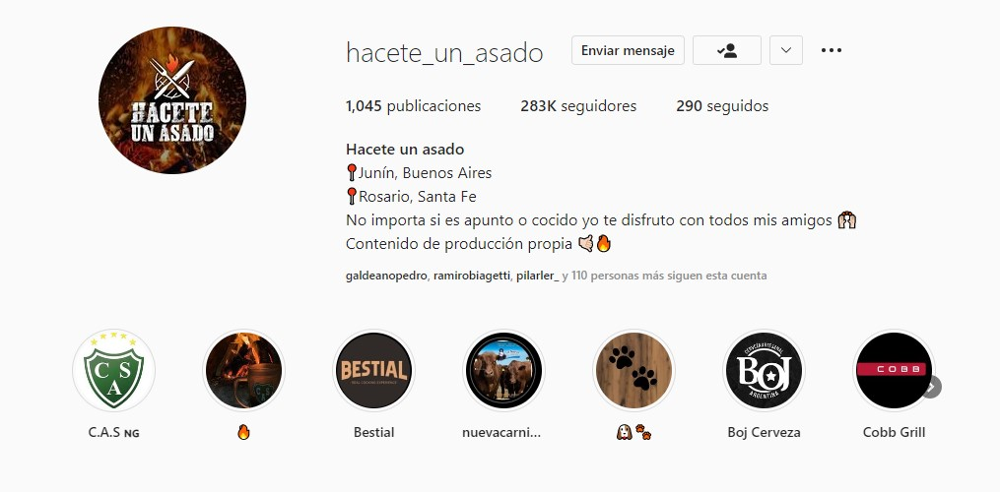

EL COMIENZO
Somos dos hermanos gemelos Thomas y Agustin lopez nacimos en Junin provincia de Buenos Aires (ARG) y le dimos comienzo a esta pagina en el año 2019.

Comenzo como un hobby y tradicion de cada domingo en familia o con amigos, haciendo asados, algo que tanto nos apasiona a los argentinos. El perfil de instagram fue creciendo de una manera exponencial, tal que en unos meses nos llegaron nuestras primeras propuestas de trabajo. y decidimos formalizar lo que haciamos como un pasatiempo para llegar a ser lo que somos hoy en dia.
Actualmente nuestro perfil de instagram @Hacete_un_asado cuenta con 283.000 seguidores de toda Latinoamerica.
